🏠
日
月
縦書き／横書き

| 【対訳】ピーターラビット ⑨ 街ねずみジョニーのおはなし ―THE TALE OF JONNY TOWN-MOUSE― | |
| ビアトリクス・ポター | |
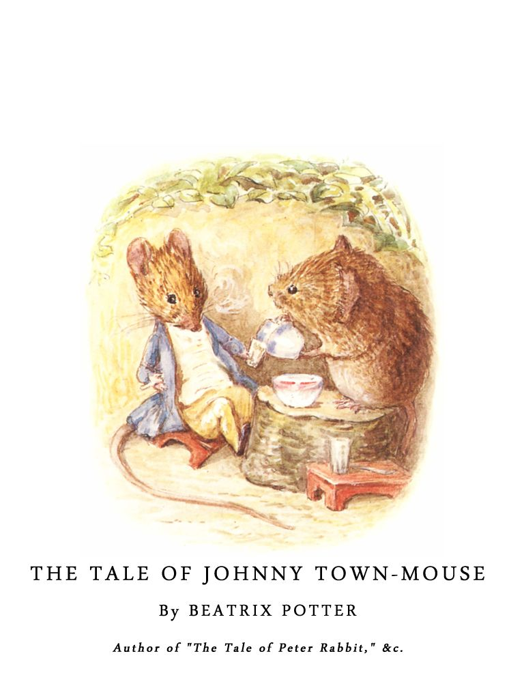
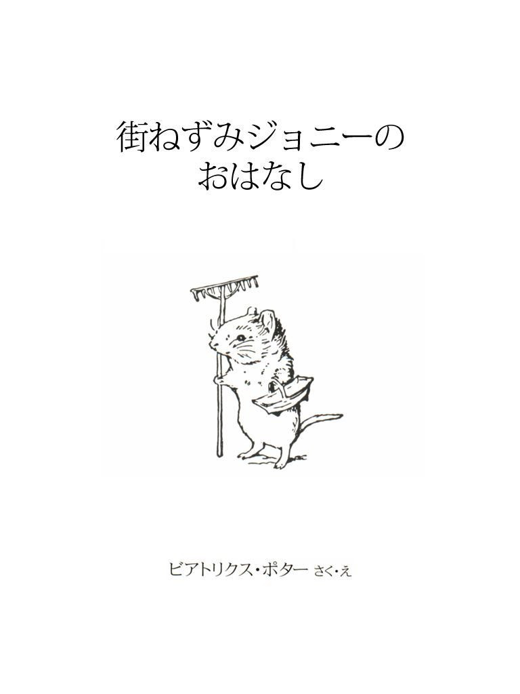
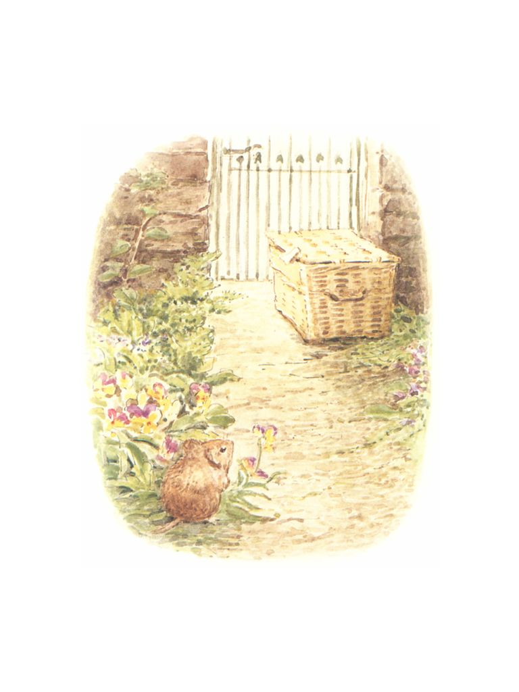
都会のネズミ、ジョニーは食器棚のなかで生まれました。ティミー・ウィリーは田舎の畑で生まれました。ティミーは、まちがって野菜のかごに紛れ込んでしまい、田舎から都会へとやってきました。ティミー・ウィリーが住んでいた畑の農家では週に一度、野菜を街に出荷していたのです。
Johnny Town-mouse was born in a cupboard. Timmy Willie was born in a garden. Timmy Willie was a little country mouse who went to town by mistake in a hamper. The gardener sent vegetables to town once a week by carrier; he packed them in a big hamper.
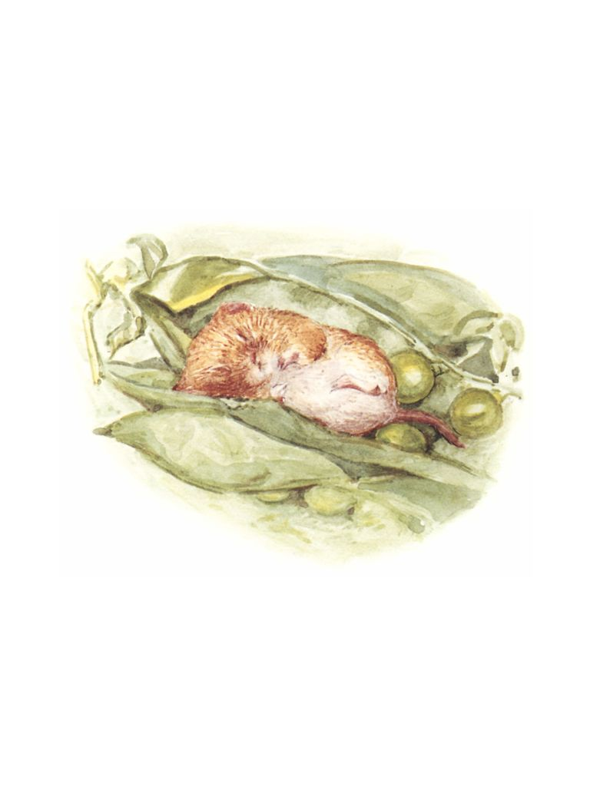
農家の主人は運送業者が持って行けるように、畑の入口に野菜のかごを置いていました。ティミー・ウィリーは好奇心から、かごのなかに入ってしまったのです。そしてかごのなかに入っていた豆を食べて、ぐっすりと眠ってしまいました。
The gardener left the hamper by the garden gate, so that the carrier could pick it up when he passed. Timmy Willie crept in through a hole in the wicker-work, and after eating some peas――Timmy Willie fell fast asleep.
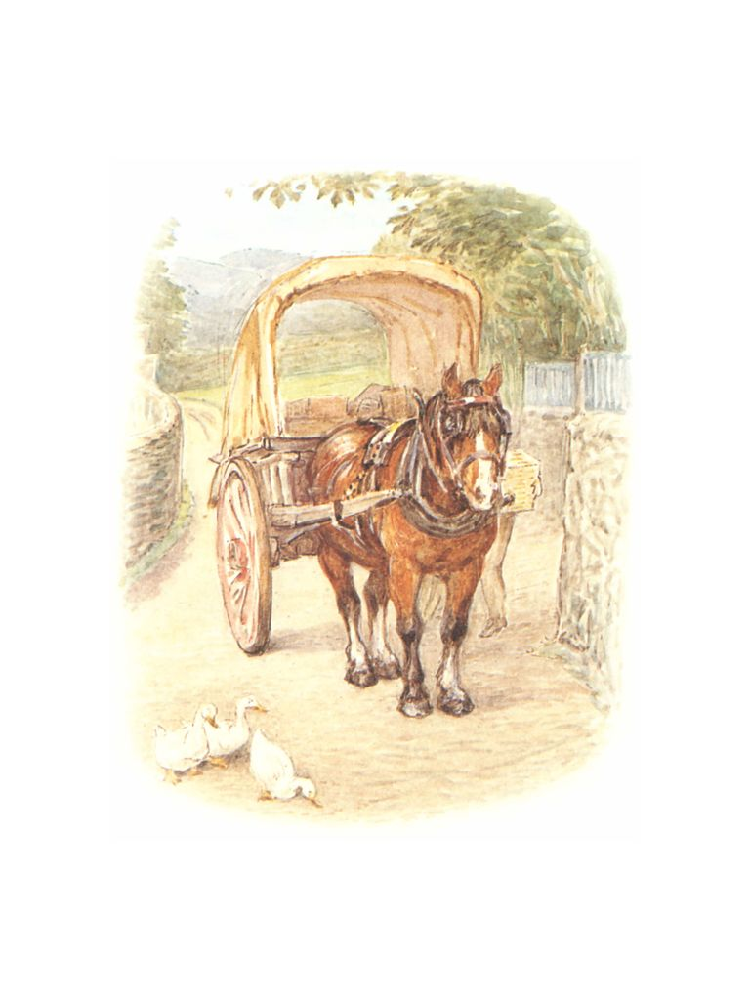
運送業者がかごを荷台に載せたときにティミーは目が覚めました。運ばれていく間、荷物は揺らされ、ゴトゴトと音を立てていました。ティミー・ウィリーは野菜といっしょに揺らされながら、怯えていました。
He awoke in a fright, while the hamper was being lifted into the carrier's cart. Then there was a jolting, and a clattering of horse's feet; other packages were thrown in; for miles and miles――jolt――jolt――jolt! and Timmy Willie trembled amongst the jumbled up vegetables.
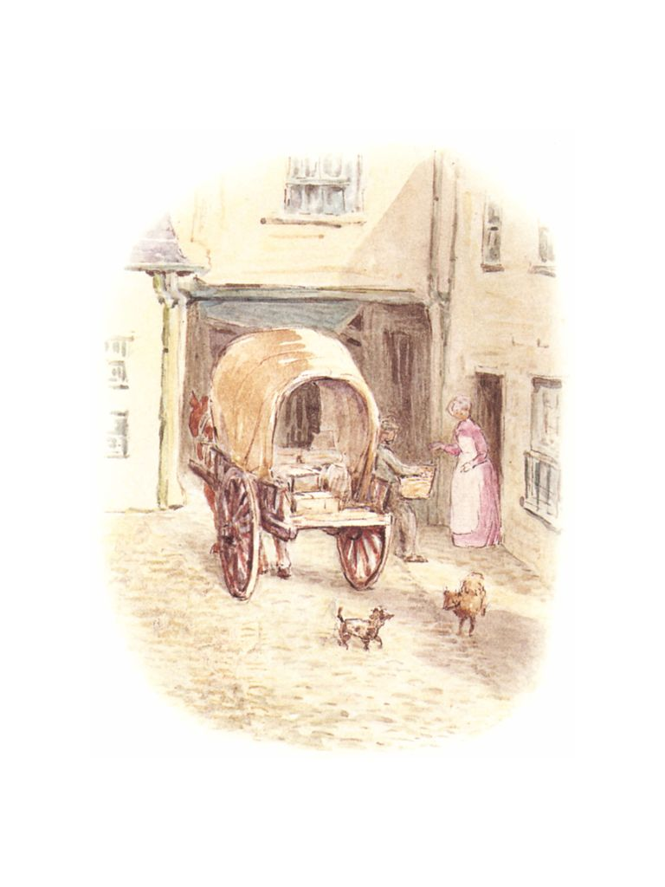
荷台はどこかの家で停まり、そこで野菜かごが降ろされ、家の中に運ばれました。調理人が運び賃の６ペンスを支払って、裏口の扉がバタンと閉められました。運送業者はどこかに行ってしまいました。だけどまったく静かにはなりません。何百台もの馬車が行き来しているようです。犬が吠える声や、通りから聞こえる口笛、調理人の笑い声、小間使いが階段をせわしなく上ったり下りたりする音、蒸気エンジンのように鳴くカナリアの鳴き声、それらがひっきりなしに聞こえてきます。
At last the cart stopped at a house, where the hamper was taken out, carried in, and set down. The cook gave the carrier sixpence; the back door banged, and the cart rumbled away. But there was no quiet; there seemed to be hundreds of carts passing. Dogs barked; boys whistled in the street; the cook laughed, the parlour maid ran up and down-stairs; and a canary sang like a steam engine.
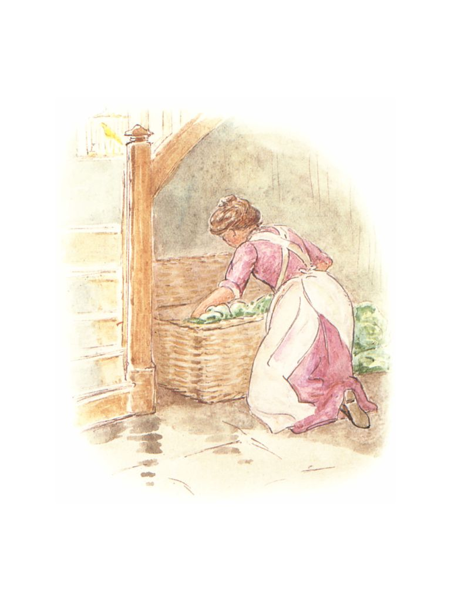
田舎の畑で暮らしていたティミー・ウィリーは死ぬほど怖くなりました。やがて調理人は野菜かごを開けて、野菜を取りだし始めました。怯えていたティミー・ウィリーはかごから飛びでました。
Timmy Willie, who had lived all his life in a garden, was almost frightened to death. Presently the cook opened the hamper and began to unpack the vegetables. Out sprang the terrified Timmy Willie.
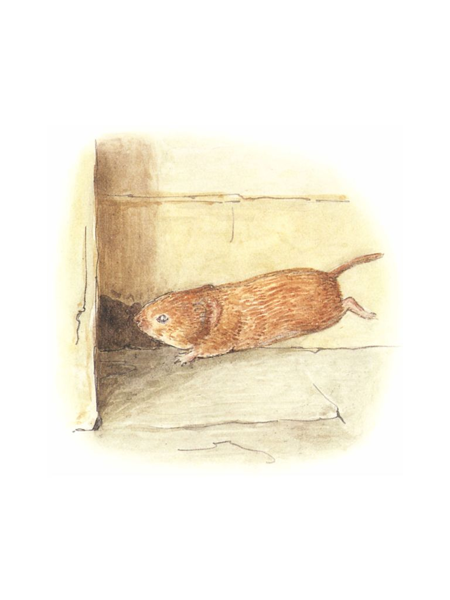
調理人はビックリしてイスの上に飛び乗り、「ねずみだ！ ねずみがいる！ ねこを連れてきてくれ。サラ、火かき棒を持ってきなさい」と叫びました。ティミー・ウィリーはサラが火かき棒を持ってくる前に逃げ出し、壁の下にあるはめ板沿いに走って、小さな穴の中に駆けこみました。
Up jumped the cook on a chair, exclaiming "A mouse! a mouse! Call the cat! Fetch me the poker, Sarah!" Timmy Willie did not wait for Sarah with the poker; he rushed along the skirting board till he came to a little hole, and in he popped.
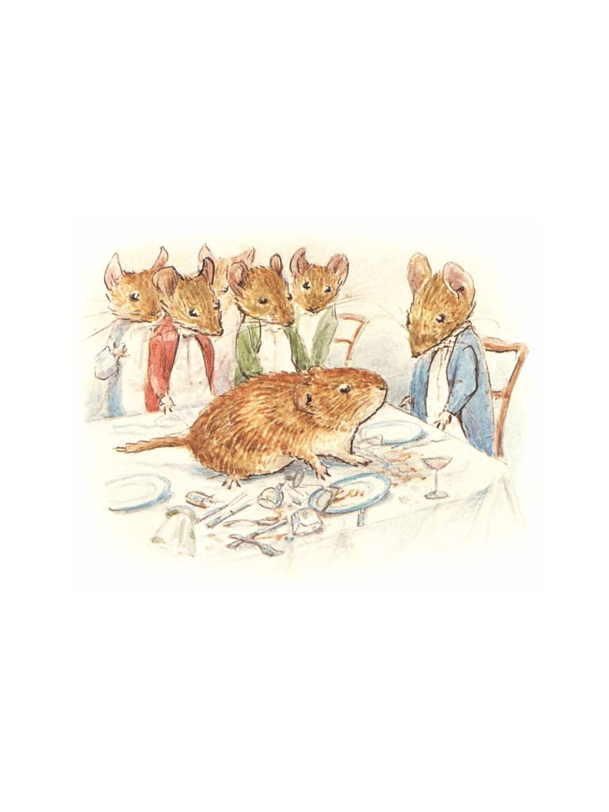
ティミーは15
cmほど下に落ちて、ねずみがディナーパーティーをしている場に転げてグラスを３つ壊してしまいました。「君は誰だい？」街のねずみ、ジョニーがして尋ねました。しかし落ち着きを取り戻すと、ジョニーは礼儀正しい態度になりました。
He dropped half a foot, and crashed into the middle of a mouse dinner party, breaking three glasses.――"Who in the world is this?" inquired Johnny Town-mouse. But after the first exclamation of surprise he instantly recovered his manners.
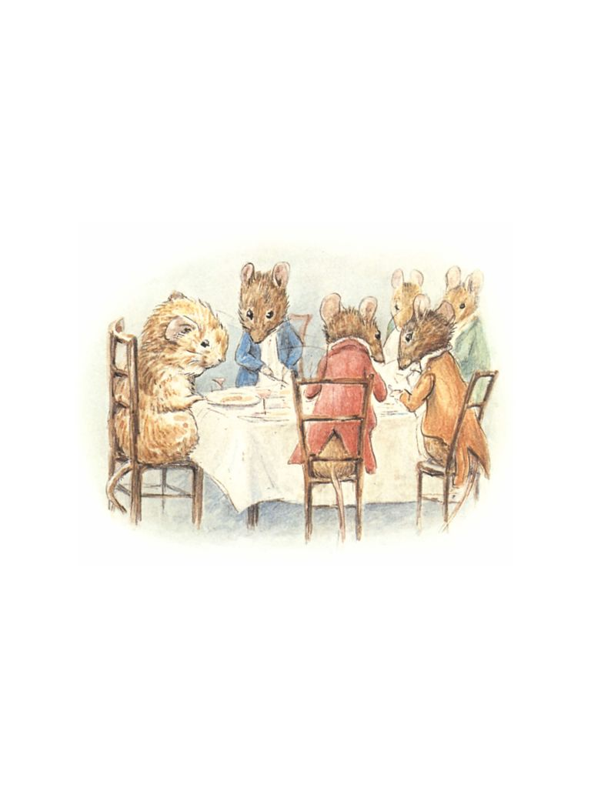
そしてティミー・ウィリーはとても丁寧に、パーティーに参加していたほかの９匹のねずみたちにティミーを紹介しました。ほかのねずみたちは、シッポが長く白いネクタイを身につけていました。ティミーのシッポは粗末なもので、ジョニーと仲間たちはそのことに気づいてしまいました。でも彼らは育ちがよいので、シッポについてはなにも言いませんでした。ただ１匹のねずみは、ティミーがねずみ捕りに引っかかったことがあるかを尋ねました。
With the utmost politeness he introduced Timmy Willie to nine other mice, all with long tails and white neckties. Timmy Willie's own tail was insignificant. Johnny Town-mouse and his friends noticed it; but they were too well bred to make personal remarks; only one of them asked Timmy Willie if he had ever been in a trap?
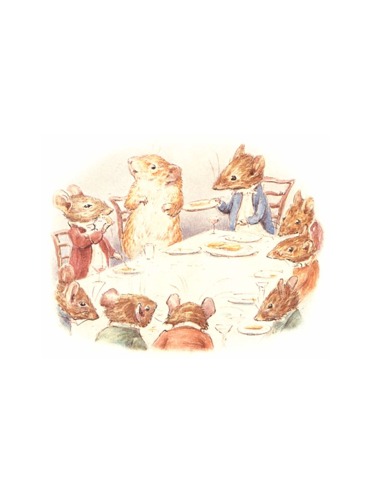
ねずみのディナーパーティーには８品の料理が用意されていて、量が多いわけではありませんが、とても上品なものでした。ティミー・ウィリーはどの料理も見たことがなかったので、口にするのが少し怖かったのですが、お腹は空いているし、食べないのは失礼だと思いました。上からはずっと音がするので、ティミーは怖さのあまり、皿を落としてしまいました。「気にしなくても大丈夫だよ。私たちの皿じゃないんだから」とジョニーは言いました。
The dinner was of eight courses; not much of anything, but truly elegant. All the dishes were unknown to Timmy Willie, who would have been a little afraid of tasting them; only he was very hungry, and very anxious to behave with company manners. The continual noise upstairs made him so nervous, that he dropped a plate. "Never mind, they don't belong to us," said Johnny.
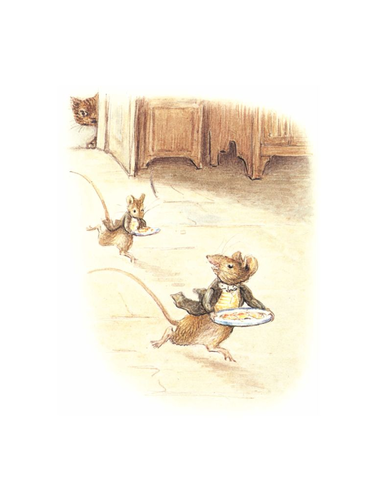
「どうしてあの若い子たちはデザートを持ってこないんだろう？」とねずみたちは言いました。というのも２匹の若いねずみが上の台所に食べ物を取りに行っていたからです。しばらくするとキーキー鳴いたり、笑ったりしながら若いねずみたちが転がりこんできました。彼らがねこに追いかけられたことを聞かされて、ティミーは恐怖に震えました。すっかり食欲がなくなり、気を失うかのようです。ジョニーは「ゼリーでも食べない？」と勧めました。
"Why don't those youngsters come back with the dessert?" It should be explained that two young mice, who were waiting on the others, went skirmishing upstairs to the kitchen between courses. Several times they had come tumbling in, squeaking and laughing; Timmy Willie learnt with horror that they were being chased by the cat. His appetite failed, he felt faint. "Try some jelly?" said Johnny Town-mouse.
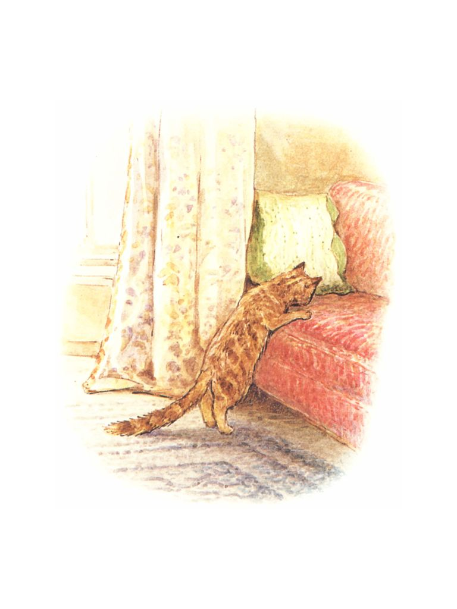
「食べないの？ もしかして眠くなった？ じゃあ心地よいソファーに案内しよう」
そのソファーは穴が空いていました。ジョニーはとても親切に、特別な寝床であるソファーを勧めてくれました。しかしソファーからはねこの匂いがします。ティミーは暖炉の下でみじめな夜を過ごすことになりました。
"No? Would you rather go to bed? I will show you a most comfortable sofa pillow."
The sofa pillow had a hole in it. Johnny Town-mouse quite honestly recommended it as the best bed, kept exclusively for visitors. But the sofa smelt of cat. Timmy Willie preferred to spend a miserable night under the fender.
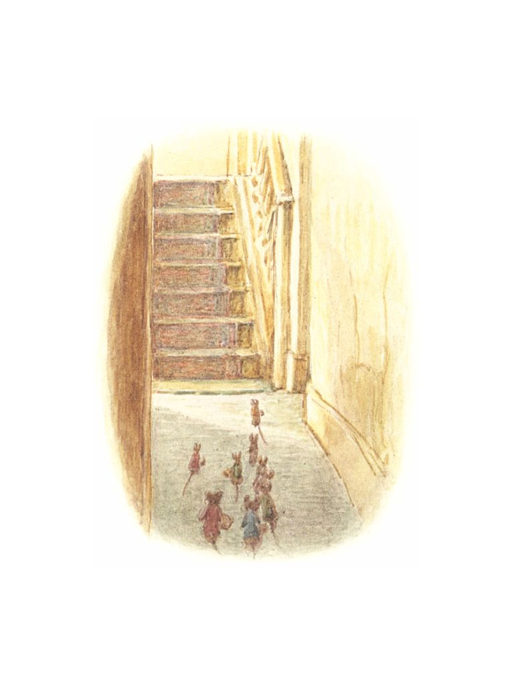
次の日、すばらしい朝食が用意されていました。街のねずみにはお馴染みのベーコンです。しかしティミーは木の根やレタスしか食べたことがありません。ジョニーとその仲間たちは床下でおおいに騒ぎ、夕方には穴から出て大胆にも家の中を歩き回りました。そのような騒ぎのなかで、とりわけ大きな音は、サラがお茶を運んでいたお盆とともに２階から転げ落ちた音でした。ねこがいたにもかかわらず、ねずみたちはパンのかけら、砂糖、ジャムのかたまりなどを手に入れました。
It was just the same next day. An excellent breakfast was provided――for mice accustomed to eat bacon; but Timmy Willie had been reared on roots and salad. Johnny Town-mouse and his friends racketted about under the floors, and came boldly out all over the house in the evening. One particularly loud crash had been caused by Sarah tumbling downstairs with the tea-tray; there were crumbs and sugar and smears of jam to be collected, in spite of the cat.
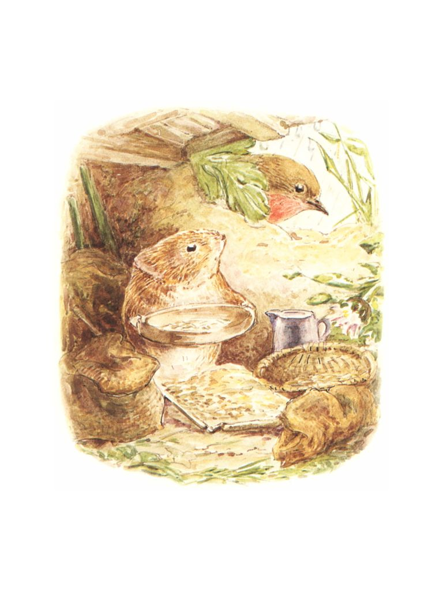
ティミーは陽のあたる土手にある、平穏な自分のおうちに帰りたいと考えていました。街の食べ物は口に合いません。騒音がうるさくてゆっくり眠ることもできません。数日すると、ティミーはやせ細ってしまいました。ジョニーはそれに気づいて尋ねてきたのです。ティミーの話を聴き終えると、ジョニーは畑がどのようなところかを尋ねました。「すごく退屈な場所に思えるのですが？ 雨のときはどうやってしのぐの？」
Timmy Willie longed to be at home in his peaceful nest in a sunny bank. The food disagreed with him; the noise prevented him from sleeping. In a few days he grew so thin that Johnny Town-mouse noticed it, and questioned him. He listened to Timmy Willie's story and inquired about the garden. "It sounds rather a dull place? What do you do when it rains?"
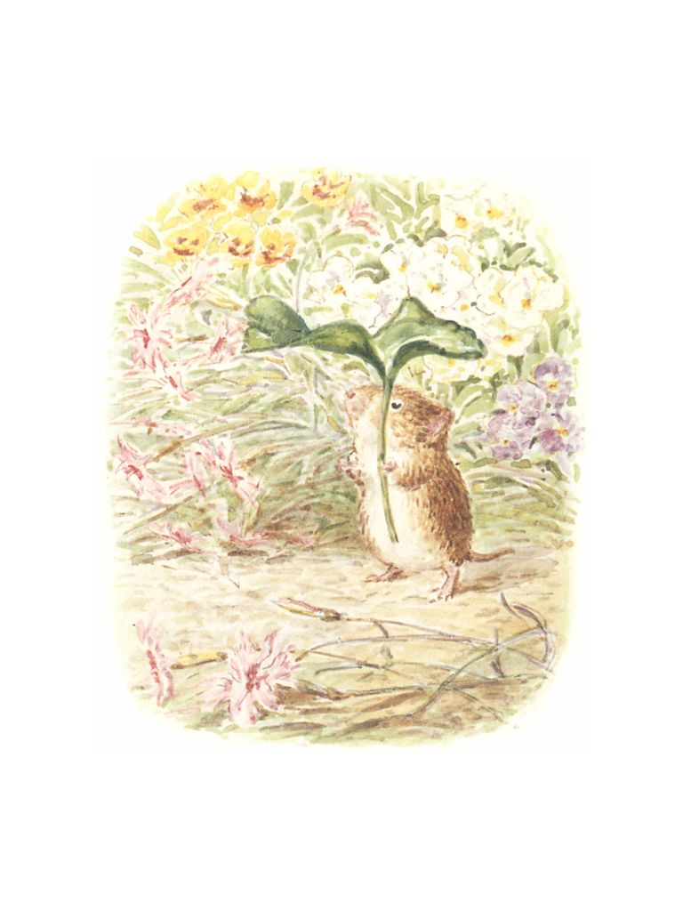
「雨が降ったら砂に掘ったおうちの中で、秋に集めておいたトウモロコシや種を剥いて過ごすんだ。それからウタツグミやクロナキドリ、私の友人であるコマドリのコック・ロビンが鳴くのもよく聴くかな。天気がよいときの畑を君に見せてあげたいよ。バラやパンジーが一面に咲き誇っていて、鳥やハチ、ヒツジのほかには音をたてるものもないんだ」
"When it rains, I sit in my little sandy burrow and shell corn and seeds from my Autumn store. I peep out at the throstles and blackbirds on the lawn, and my friend Cock Robin. And when the sun comes out again, you should see my garden and the flowers――roses and pinks and pansies――no noise except the birds and bees, and the lambs in the meadows."
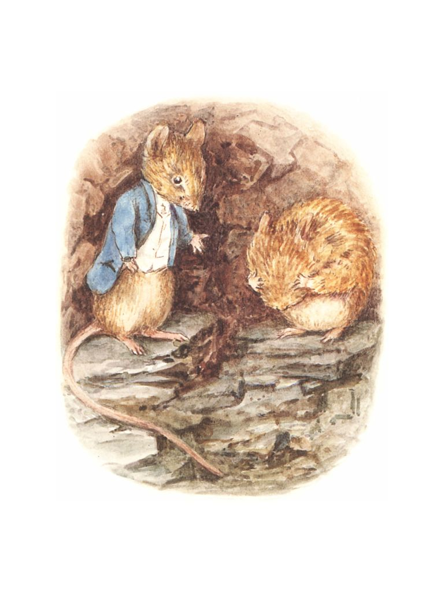
「ねこがまた来ましたよ！」ジョニーが叫びました。ふたりは石炭置き場の中に逃げ込んでから、話を続けました。「ティモシー・ウィリアム君、正直なところ、少しがっかりしてるんだ。だって、僕らは君が楽しめるようにもてなしていたつもりだったもの」
「うん、それはもちろんわかってるよ。君とそのお友達はとてもよくしてくれたさ。でも僕はちょっと疲れちゃったんだ」とティミー・ウィリーは言いました。
"There goes that cat again!" exclaimed Johnny Town-mouse. When they had taken refuge in the coal-cellar he resumed the conversation; "I confess I am a little disappointed; we have endeavoured to entertain you, Timothy William."
"Oh yes, yes, you have been most kind; but I do feel so ill," said Timmy Willie.
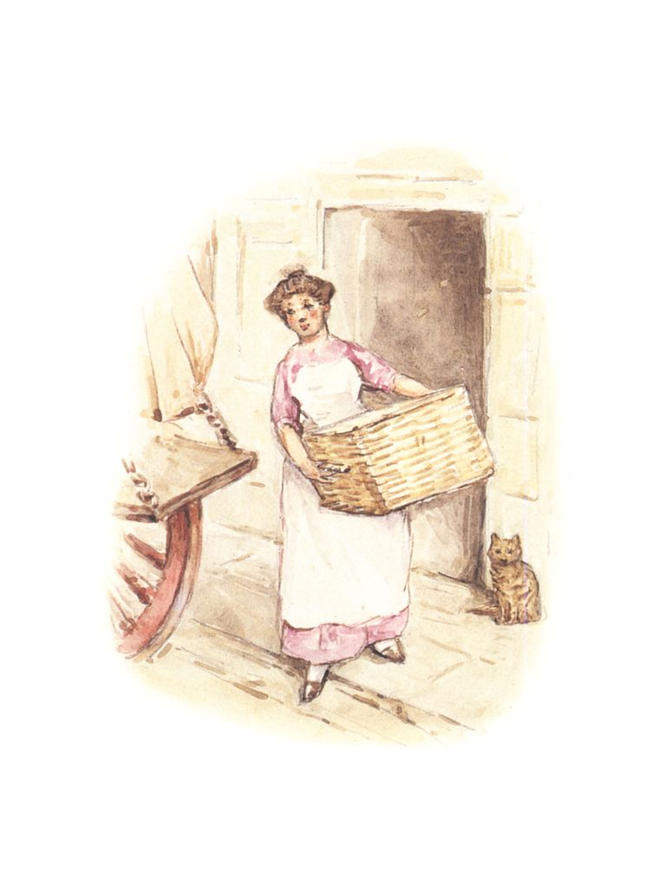
「食べ物が合わないのかも知れないね。確かに野菜かごに戻ったほうがいいのかも」
「え？ え！」とティミー・ウィリーは叫びました。
「実は、先週、君を田舎に帰してあげることもできたんだ。野菜かごは土曜日には空になった状態で田舎に運ばれるからね」少し機嫌を損ねた様子でジョニーが言いました。
"It may be that your teeth and digestion are unaccustomed to our food; perhaps it might be wiser for you to return in the hamper."
"Oh? Oh!" cried Timmy Willie.
"Why of course for the matter of that we could have sent you back last week," said Johnny rather huffily――"did you not know that the hamper goes back empty on Saturdays?"
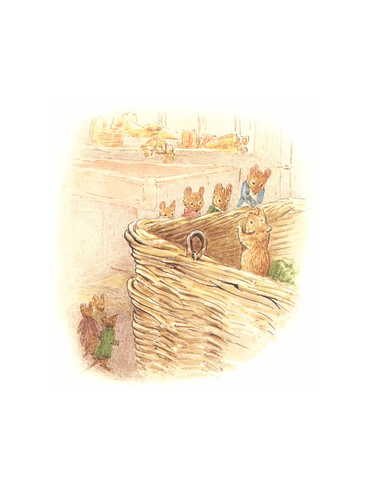
それからティミー・ウィリーは新しく友人になったねずみたちに別れを告げ、ケーキのかけらやレタスの葉を持って野菜かごに忍びこみました。それからずいぶん時間をかけて愛しい我が家に帰ることができたのです。
So Timmy Willie said good-bye to his new friends, and hid in the hamper with a crumb of cake and a withered cabbage leaf; and after much jolting, he was set down safely in his own garden.
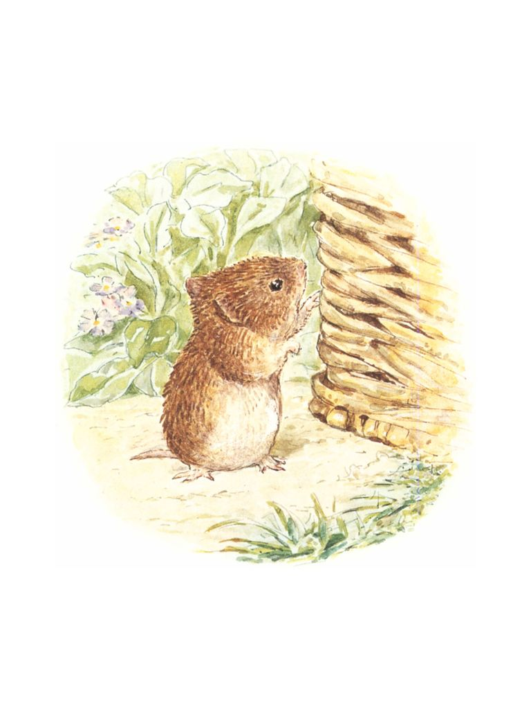
土曜日になると、たまに野菜かごが門のところで運ばれているのをティミーは見に行きました。しかし彼はかごには入りませんでした。街のねずみ、ジョニーはティミーを訪ねてくる約束をしていましたが、誰かがかごから出てくることもありませんでした。
Sometimes on Saturdays he went to look at the hamper lying by the gate, but he knew better than to get in again. And nobody got out, though Johnny Town-mouse had half promised a visit.
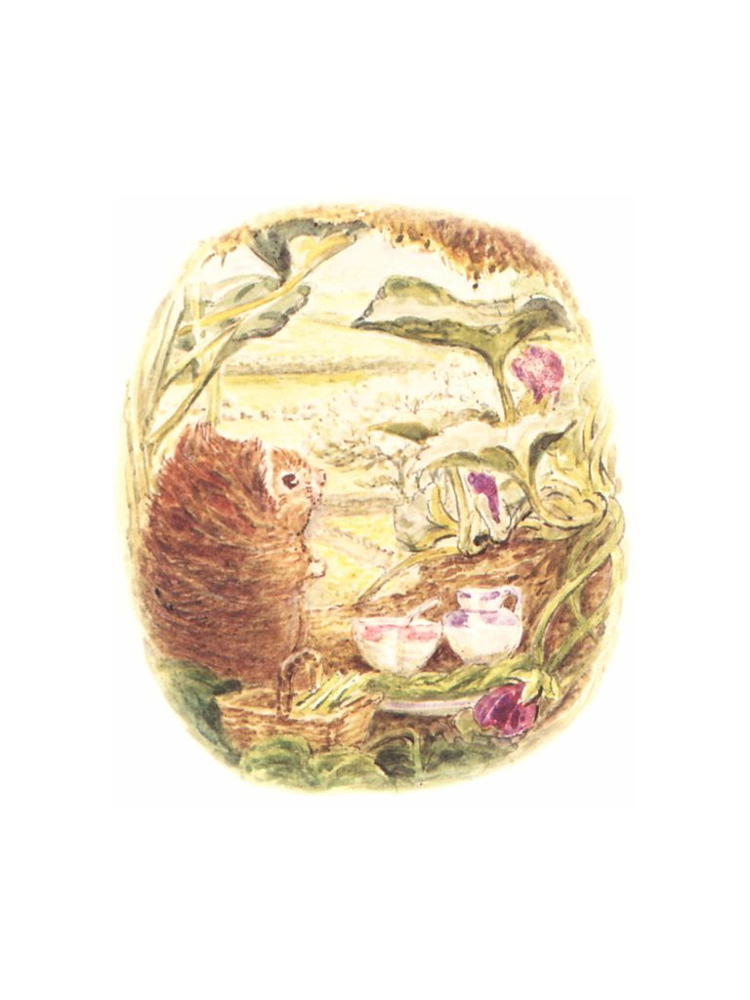
冬が去って、陽が高くなり始めました。ティミー・ウィリーは巣穴のそばで、毛皮を暖めたり、スミレや春の芝生の匂いをかいでいました。街に行ったことはほとんど忘れていました。しかしある日、街のねずみ、ジョニーが茶色の革製バッグを持って砂の小道を歩いてきたのです！
The winter passed; the sun came out again; Timmy Willie sat by his burrow warming his little fur coat and sniffing the smell of violets and spring grass. He had nearly forgotten his visit to town. When up the sandy path all spick and span with a brown leather bag came Johnny Town-mouse!
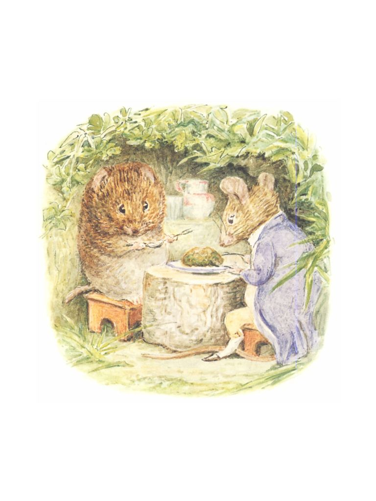
ティミーはもろ手をあげて歓迎しました。「１年で一番よい時期に来たね。ひなたに座ってハーブのプディングでも食べよう」
「うん、少し湿った場所だね」とシッポが泥で汚れないように手で持ちながらジョニーは言いました。
Timmy Willie received him with open arms. "You have come at the best of all the year, we will have herb pudding and sit in the sun."
"H'm'm! it is a little damp," said Johnny Town-mouse, who was carrying his tail under his arm, out of the mud.
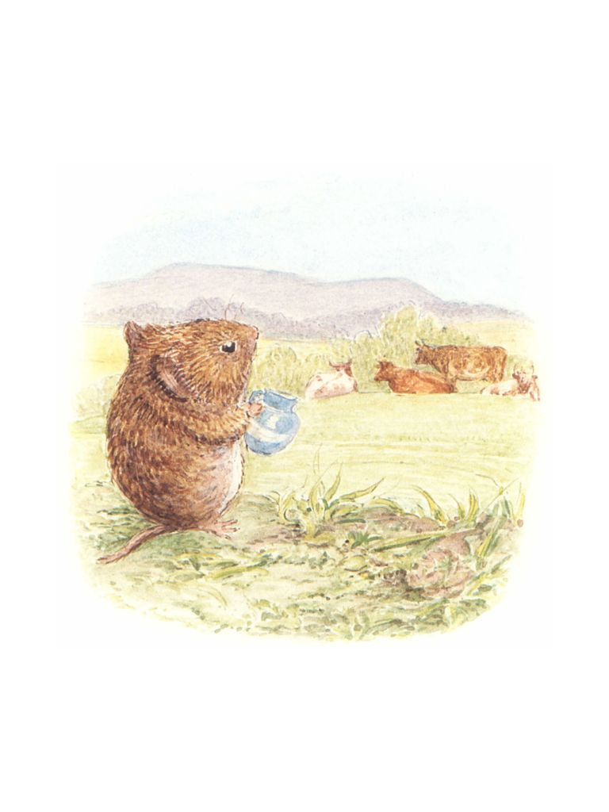
「あの恐ろしい音は何なの？」ひどくビックリした様子です。
「あれかい？」ティミーが答えます。「雌牛ですよ。少し牛乳をもらってくるね。彼女らはおとなしくて、まったく害はないんだよ。あなたの上に寝転がらないかぎりはね。お友達はどうしてる？」
"What is that fearful noise?" he started violently.
"That?" said Timmy Willie, "that is only a cow; I will beg a little milk, they are quite harmless, unless they happen to lie down upon you. How are all our friends?"
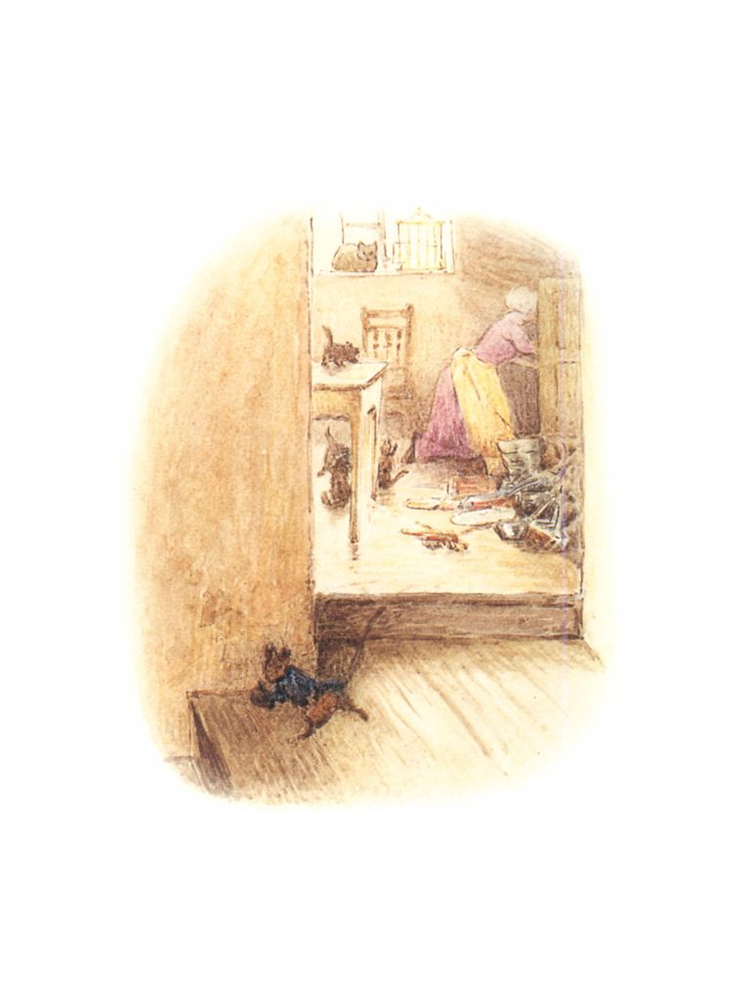
ジョニーの話はあまり喜ばしいものではありませんでした。なぜこんなに早く彼がティミーを訪ねてきたのかというと、それはあの家に住む家族が感謝祭に向けて海岸に旅行に出かけたので、その間に調理人がネズミ退治のための掃除を始めたというのです。さらには子ねこが４匹産まれ、カナリアもねこに殺されたそうです。
Johnny's account was rather middling. He explained why he was paying his visit so early in the season; the family had gone to the sea-side for Easter; the cook was doing spring cleaning, on board wages, with particular instructions to clear out the mice. There were four kittens, and the cat had killed the canary.
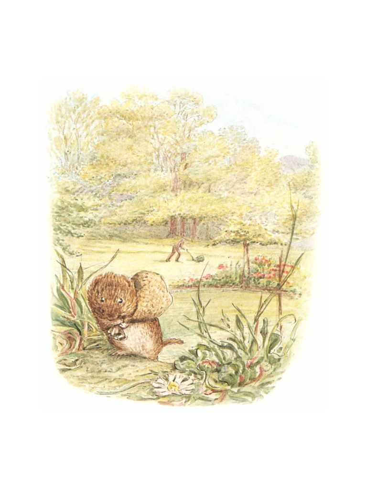
「家の人は、私たちがカナリアを殺したと言ってるんだ。でもそれは違うのさ」とジョニーは言いました。
「ところであれは何？」
「あれはただの芝刈り機だよ。芝を拾ってきてあなたのベッドを作るね。街がそのような状況であれば、田舎に住んだほうがいいんじゃない、ジョニー」
"They say we did it; but I know better," said Johnny Town-mouse. "Whatever is that fearful racket?"
"That is only the lawn-mower; I will fetch some of the grass clippings presently to make your bed. I am sure you had better settle in the country, Johnny."
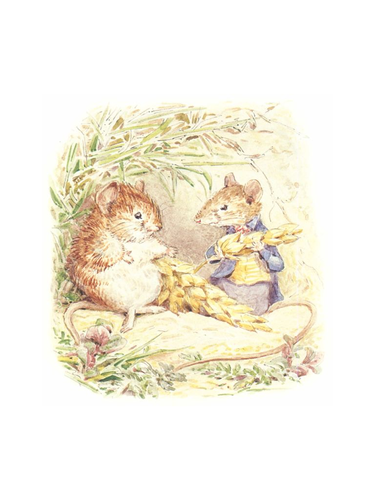
「うん、火曜日まで様子を見るよ。家族が海岸に出かけている間は、野菜かごは運ばれないから」
「きっと街に戻りたいとは思わないよ」とティミー・ウィリーは言いました。
"H'm'm――we shall see by Tuesday week; the hamper is stopped while they are at the sea-side."
"I am sure you will never want to live in town again," said Timmy Willie.
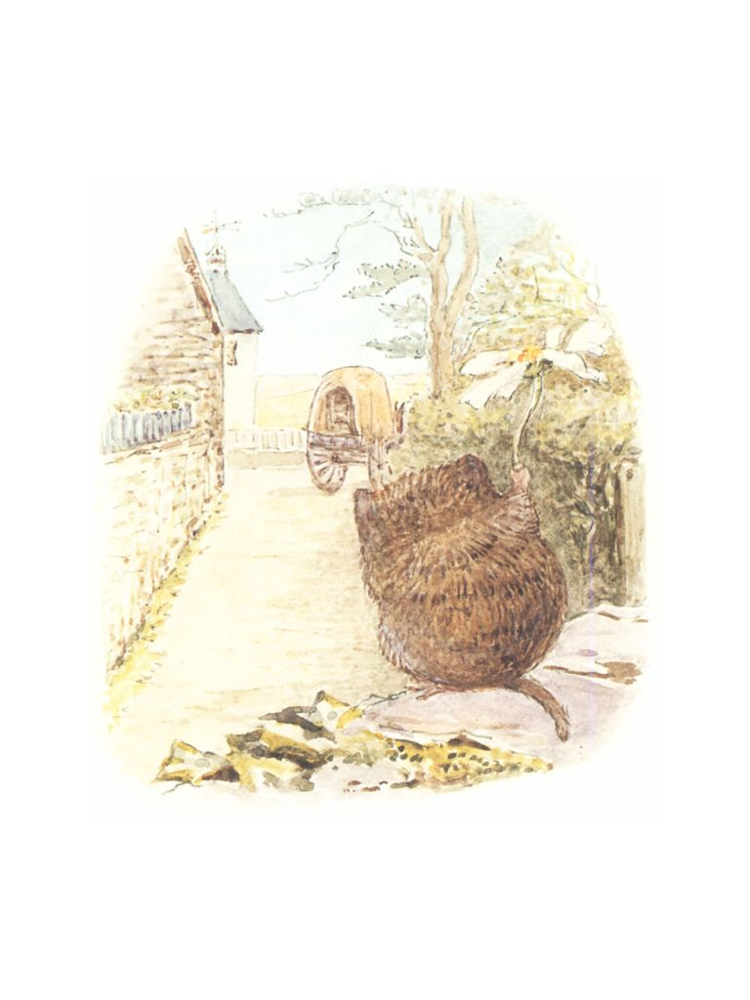
しかし結局ジョニーは野菜かごが次に運ばれるときに街へ帰りました。彼が言うには、田舎は静かすぎるということでした。
But he did. He went back in the very next hamper of vegetables; he said it was too quiet!!
「ある場所はある人にとって居心地がよく、また別の人には別の場所が居心地がよいものです。わたしはどうかですって!? わたしはティミー・ウィリーと同じで、田舎に住むほうが好きですよ」
おしまい
One place suits one person, another place suits another person. For my part I prefer to live in the country, like Timmy Willie.
【対訳】ピーターラビットシリーズ ⑨
街ねずみジョニーのおはなし
－THE TALE OF JOHNNY TOWN-MOUSE－
発行日 ２０１４年３月７日
著 者 ビアトリクス・ポター
発行者 赤井 仁
発行所 ゴマブックス株式会社
〒１０７－００５２
東京都港区赤坂８－５－40
ペガサス青山７１０
(c) GOMA－BOOKS Co.,ltd. 2014